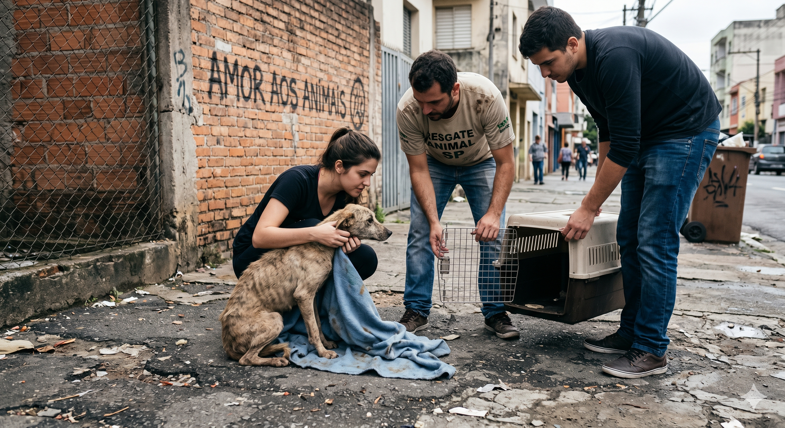

Conheça nossa história e a missão que nos move todos os dias
Pets adotados
Anos de história
Voluntários ativos
Cidades atendidas
A 4PatasFortaleza nasceu em 2017 a partir de um grupo de amigos apaixonados por animais que não podiam mais fechar os olhos para a quantidade de cães e gatos abandonados nas ruas de Fortaleza e região metropolitana.
O que começou como resgates informais nos finais de semana rapidamente se transformou em uma rede de apoio sólida. Hoje, contamos com abrigos parceiros, clínicas veterinárias aliadas e uma legião de voluntários dedicados a reabilitar e encontrar lares cheios de amor para cada um dos nossos peludos.

Resgatar, reabilitar e promover a adoção responsável de cães e gatos em situação de abandono, garantindo a eles uma segunda chance de serem felizes.
Ser referência no bem-estar animal no estado do Ceará, sonhando com um futuro onde nenhum animal precise sofrer nas ruas por falta de amor e cuidado.
Amor incondicional à vida, responsabilidade social, transparência em nossas ações e empatia tanto com os animais quanto com as famílias adotantes.
Conheça alguns dos rostos por trás da nossa instituição
Idealizadora do projeto, dedica sua vida a dar voz aos animais.
Responsável por cuidar da saúde e reabilitação dos nossos resgatados.
Organiza nossa rede de amor e treinamentos com voluntários.
Faz a ponte perfeita entre as famílias e os pets que aguardam um lar.